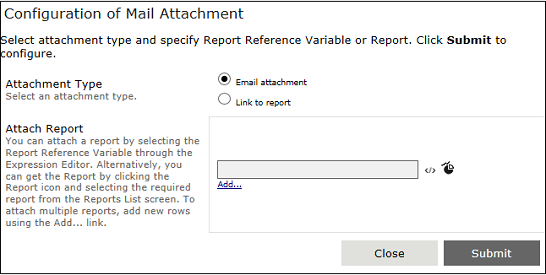
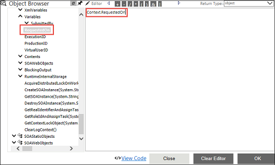
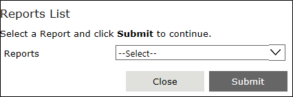

No
Configuration of Mail Attachment property window
You can configure the Attachment property for the Approval activity in this property window.
In this property window, you can configure the report attachments to be emailed.

You can attach a report by selecting the required Report Reference Variable using the Expression Editor. Alternatively, you can select the report from the Reports List window which consists of the already generated reports.
There must be at least one Report Generator activity before an Approval activity in the workflow to select the Report Reference Variable (using Expression Editor) as an Attachment. The Report Reference Variable is generated while configuring the Report Generator activity. By default, the report reference variable is [Template Name]_[activity Name]. For more information about Report Reference Variable, see Configure Report Template.
To configure mail attachment:

The variable appears in the Attach Report text box.

This window closes automatically.